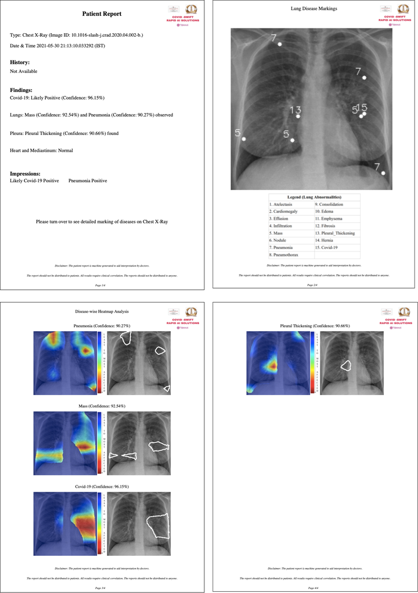
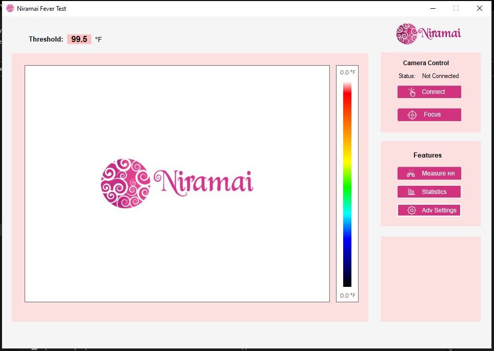
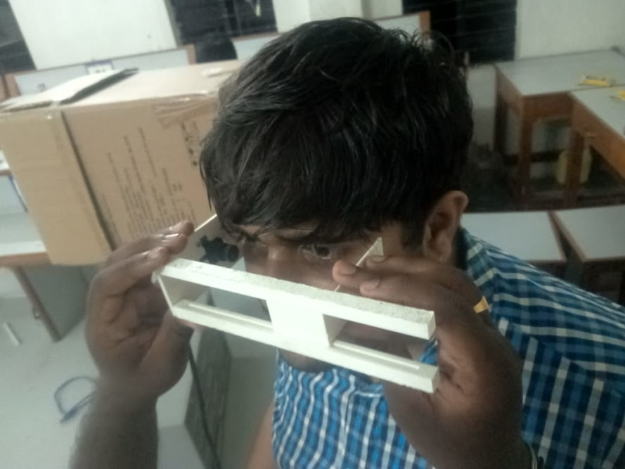
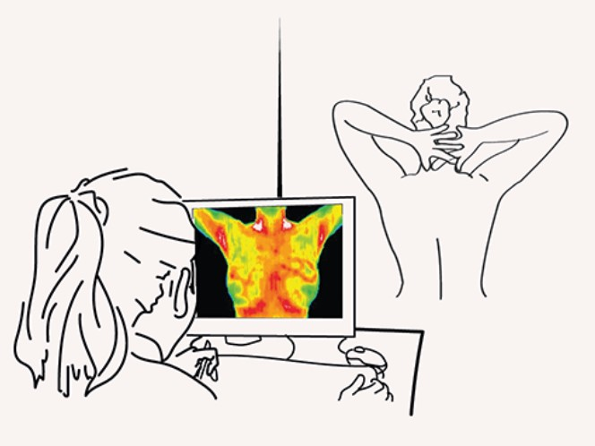

Pratik Katte
Research Engineer at Niramai Health Analytix
Interested in technology, healthcare and its delivery.
Email.
LinkedIn.
Github.
Twitter.
Projects
- XraySetu
- Niramai Fever Test
- Digital Exophthalmometer
- Niramai Thermal Capture Tool
- GetRewind (startup)
- Smart India Hackathon
- Xerox Research-Delhi Internship
XraySetu - AI driven Xray Interpretion for Doctors via Whatsapp

XraySetu is a joint collaboration between Niramai Health Analytix, Indian Institute of Science and ARTPARK
In India, there is less than 1 radiologist for every million people. COVID 2nd wave had a disastrous impact on not only metropolitan cities but also even in rural parts of India. RT-PCR was resulting in lot of misdiagnosis for the covid-19 delta variant virus. Hence, many of the doctors were relying on lung x-ray scans for diagnosis of COVID-19. With the limited number of radiologists in the country, it was impossible for doctors in 2nd tier cities and rural areas to diagnose covid-19 using lung x-rays. XraySetu allows doctors to plan early intervention for their patients by simply taking a picture of their Xray and sending it over via Whatsapp. The free Whatsapp based XraySetu service responds with a detailed report generated using our state of the art deep learning model.

The state of the art deep learning model is trained using multi-task learning on a combination of dataset from multiple sources which includes NIH and RSNA, etc. The model generates a report containing predictions for COVID-19 and 14 other lung abnormalities with interpretable semantic markings on chest x-ray. This helps doctors understand the severity of illness of their patients.
Xraysetu is widely covered in print and online media by NDTV, CNBC-TV18 News, Gadgets Now, Mint, Hindustan Times, Business Standard, Economic Times, ET Healthworld, KnockSense, Bangalore Mirror, Jagran, Zee News Hindi, and Prasar Bharti (video).
Nirmai Fever Test - Simple screening for COVID symptoms

Niramai Fever Test project was funded by CDC-Group and developed and deployed by Niramai Health Analytix.
The recent outbreak of covid-19 has brought a tremendous impact on the livelihood on the population. Community screening is the most important and primary aspect to reduce the spread of the virus in the cummunity.
Niramai Fever Test is an AI based solution integrated with a Thermal Camera to perform skin temperature screening in places with high footfall. This is a passive test where a high resoltuion thermal cameras observes multiple people simultaneously entering the building and measures the temperature.
Niramai Fever Test can also measure the breathing rate of select individuals by focusing the region under the nostrils and raises an alert if the breathing rate is deviating from the normal acceptable value.
Niramai Fever Test has been deployed in more than 100 locations which includes railyway stations, corporate tech parks, banks, etc.It has screened more than 10 lakhs of people in 2 years scince the deployment.
Digital Exophthalmometer

This project was developed by a team of experts in Computer Vision, Mecanical Engineering design and Optometrist at LVPEI.
An Exaphthalmometer is an instrument used for measuring the degree of forward displacement of the eye in exophtalmos (bulding of the eye anterioty out of the orbit). The device allows measurement of the forward distance of the lateral orbital rim to the front of the cornea. The doctors using this devices have to be specially trained and speciallised. The accuracy of the device heavily relies on the eyesight of the doctor as it uses prism and scale for measurement.
To solve this problem, we developed Digital Exaphthalmometer. A digital version of the traditionally used exaphthalmometer which involves placing a small camera on the socket bone and using computer vision algorithms to measure the forward displacement of the eye.
Niramai Thermal Capture Tool

Niramai Thermal capture Tool is a desktop based application that used by technicians in hospitals to capture thermal breast images and upload the data on thermalytix website.
The tool enables the technicians to do perform primary checks before starting to capture images. This tool also helps technicians to adhere to the screening protocol desinged by niramai for diagnosing breast cancer.
The tool uses various image processing algorithm and AI models inorder to enable technicians to perform intial checks.
Rewind - Startup
A failed attempt in building a startup to solve the waste proplem.
Rewind is a startup which I had co-founded and with my freind Venkat-sai after my undergraduation in 2019. Rewind focused on leveraging the traditionally established chain and network of waste pickers, paper and metal shops and recyclers to build a platform that enables general household population to sell or throw their scraps like cardboards, plastics bags, electronic items, clothes, furniture, etc.
The attempt failed due to various reasons. One of the primary reason for the failure was the informalized market with very closed group of high powered people handling the trades in the market. Our inability and lack of experience in managing waste pickers and recyclers was also one of the reasons for the failure.
Iris Biometrics based Attendance Management System for MGNREGA Program
This project was a part of Smart India Hackathon 2017 finals and was developed with my classmates during my undergraduation.
We designed an automated system to record attendance of the workers on work sites of MGNREGS using iris based regognition technology. We designed and developed and android application which is connected to near-infra red raspi-camera to capture iris images and record attendance of the worker. Inorder to recognise the person from the captured iris images, we implemented Daugman Algorithm introduced by John Daugman.
We implemented this project in 1 month and were finalist in the hackathon competition. This prototype was developed for the rural and welfare department of indian governments MGNREGA program for the unemployed.
Repass Program: Xerox Research India | Gooded Technologies - Internship
I worked as product intern in the Repass Program initiated by Gooded Technologis in colloboration with Xerox Research India.
Repass Program was a joint initiative by Xerox Research Center India and Gooded Technologies Pvt.Ltd, objective to develop a technology driven educational platform for high school students. I worked and contributed in developing textual, visual and video contents for subtopics in a subject(Programming with C++) on an artificial learning based platform. Developed and formulated an appropriate and creative methodology to design and manage the content.Help in managing the whole Curriculum and Planning the Course Schedule.